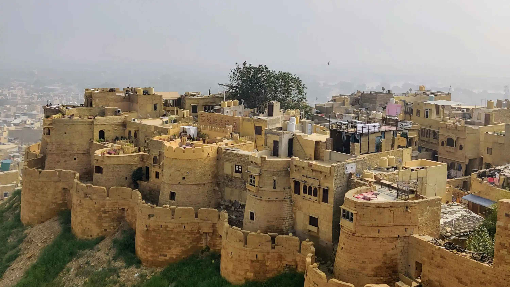
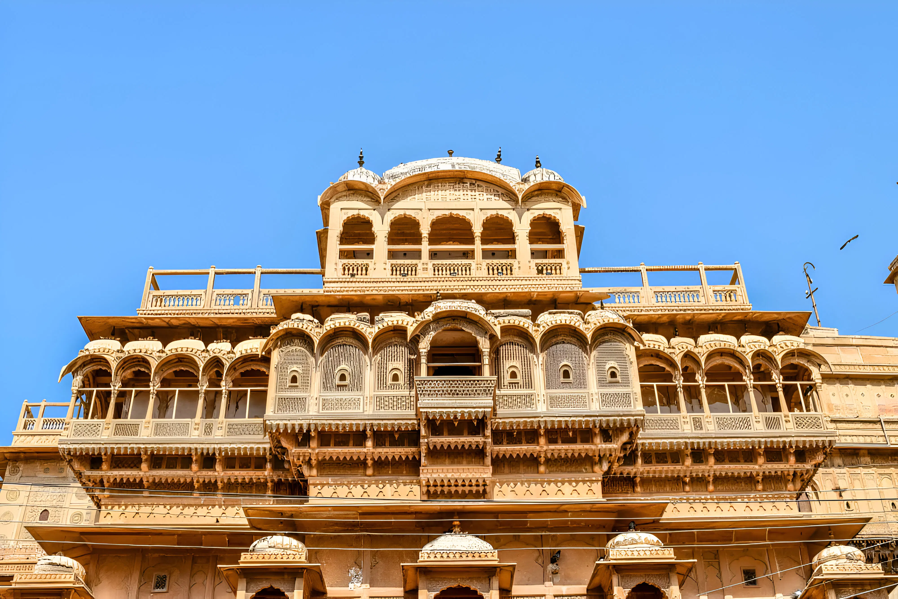
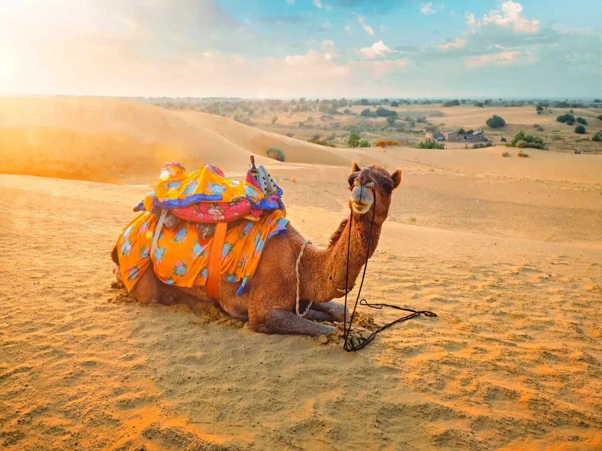
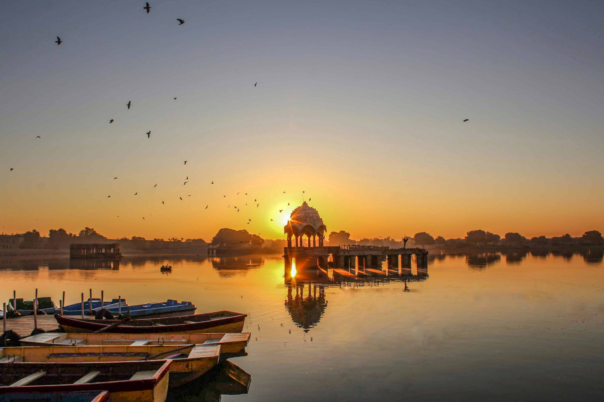
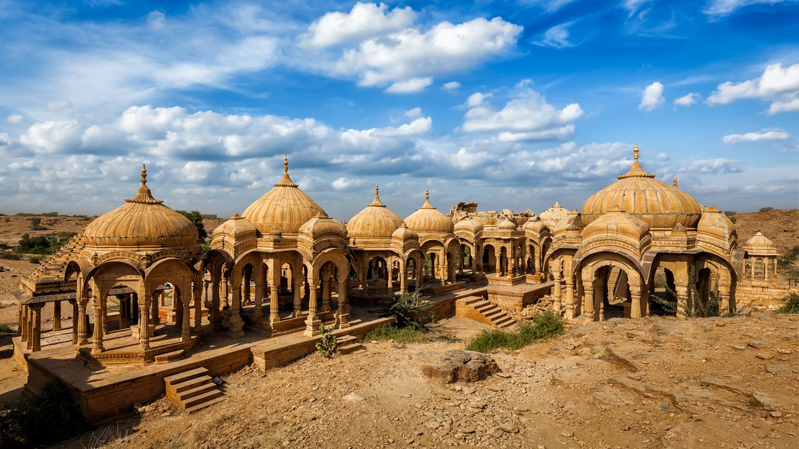
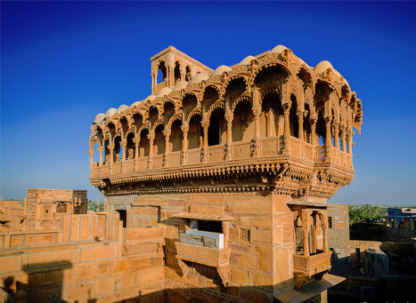

Jaisalmer Fort: The Golden Citadel
Jaisalmer Fort, also known as Sonar Quila, is a UNESCO World Heritage Site and one of the largest forts in the world.
Fun Fact:
~It’s made of yellow sandstone, giving it a golden hue, especially at sunset!
Things to Explore at Jaisalmer Fort:
-
The Palaces:
Explore the royal palaces with intricate carvings and architecture.
-
The Jain Temples:
Visit the beautifully carved Jain temples within the fort.
-
The Local Markets:
Shop for handicrafts, jewelry, and souvenirs in the bustling markets.
-
The Viewpoints:
Enjoy panoramic views of the city and desert from various viewpoints.
-
The Cultural Events:
Experience cultural performances and events held in the fort.
Why Visit Jaisalmer Fort?
!Because it’s a living fort with vibrant culture, history, and stunning architecture!

Patwon Ki Haveli: The Jewel of Jaisalmer
Patwon Ki Haveli is a collection of five havelis, showcasing the rich architectural heritage of Jaisalmer.
Fun Fact:
~It’s one of the largest and most elaborate havelis in Rajasthan!
Things to Explore at Patwon Ki Haveli:
-
The Intricate Carvings:
Admire the detailed carvings and frescoes adorning the walls.
-
The Museum:
Visit the museum displaying artifacts from the bygone era.
-
The Courtyards:
Stroll through the beautiful courtyards surrounded by stunning architecture.
-
The Local Artisans:
Meet local artisans showcasing their crafts and skills.
-
The Cultural Performances:
Enjoy cultural performances held in the haveli premises.
Why Visit Patwon Ki Haveli?
!Because it’s a glimpse into the opulent lifestyle of the royal families of Jaisalmer!

Sam Sand Dunes: The Desert Adventure
Sam Sand Dunes is a popular desert destination near Jaisalmer, known for its stunning sand dunes and desert activities.
Fun Fact:
~It’s one of the best places to experience the Thar Desert’s beauty and culture!
Things to Explore at Sam Sand Dunes:
-
The Camel Rides:
Experience a camel ride through the golden sand dunes.
-
The Desert Safari:
Enjoy thrilling jeep safaris across the vast desert landscape.
-
The Cultural Performances:
Witness traditional Rajasthani dance and music performances in the desert.
-
The Sunset Views:
Marvel at the breathtaking sunset views over the sand dunes.
-
The Camping Experience:
Spend a night under the stars in desert camps with local cuisine.
Why Visit Sam Sand Dunes?
!Because it’s an unforgettable desert experience filled with adventure, culture, and natural beauty!

Desert National Park: The Wildlife Haven
Desert National Park is a vast protected area showcasing the unique desert ecosystem and wildlife of the Thar Desert.
Fun Fact:
~It’s home to several endangered species, including the Great Indian Bustard!
Things to Explore at Desert National Park:
-
The Wildlife Safari:
Embark on a safari to spot diverse wildlife, including deer, foxes, and birds.
-
The Sand Dunes:
Explore the stunning sand dunes and unique rock formations.
-
The Flora and Fauna:
Discover the diverse flora and fauna adapted to the desert environment.
-
The Bird Watching:
Enjoy bird watching, especially during the migratory season.
-
The Cultural Heritage:
Learn about the cultural heritage of the desert communities living in harmony with nature.
Why Visit Desert National Park?
!Because it’s a sanctuary for wildlife enthusiasts and nature lovers, offering a glimpse into the desert’s rich biodiversity!

Gadisar Lake: The Serene Oasis
Gadisar Lake is an artificial lake surrounded by temples and ghats, offering a peaceful escape in the heart of Jaisalmer.
Fun Fact:
~It was built in the 14th century to provide water to the city!
Things to Explore at Gadisar Lake:
-
The Boating Experience:
Enjoy a serene boat ride on the tranquil waters of the lake.
-
The Temples:
Visit the ancient temples and shrines located around the lake.
-
The Sunset Views:
Marvel at the stunning sunset views reflecting on the lake’s surface.
-
The Local Markets:
Explore nearby markets for local handicrafts and souvenirs.
-
The Cultural Events:
Experience cultural events and festivals celebrated around the lake.
Why Visit Gadisar Lake?
!Because it’s a serene oasis offering tranquility, culture, and natural beauty amidst the desert landscape!

Bada Bagh: The Royal Cenotaphs
Bada Bagh is a complex of royal cenotaphs built in memory of the Maharajas of Jaisalmer, set against the backdrop of the desert landscape.
Fun Fact:
~It’s known for its stunning architecture and serene ambiance!
Things to Explore at Bada Bagh:
-
The Cenotaphs:
Explore the intricately carved cenotaphs dedicated to the royal family.
-
The Gardens:
Stroll through the beautifully landscaped gardens surrounding the cenotaphs.
-
The Sunset Views:
Enjoy breathtaking sunset views over the desert landscape.
-
The Local Culture:
Experience the local culture and traditions of the desert communities.
-
The Photography Opportunities:
Capture stunning photographs of the cenotaphs and surrounding landscapes.
Why Visit Bada Bagh?
!Because it’s a peaceful retreat offering a glimpse into the royal history and architectural beauty of Jaisalmer!

Salim Singh Ki Haveli: The Peacock Palace
Salim Singh Ki Haveli is a stunning haveli known for its unique architecture and intricate carvings, resembling a peacock.
Fun Fact:
~It was built in the 18th century and is famous for its distinctive architecture!
Things to Explore at Salim Singh Ki Haveli:
-
The Architecture:
Admire the unique peacock-shaped architecture and intricate carvings.
-
The Courtyards:
Stroll through the beautiful courtyards surrounded by stunning architecture.
-
The Local Artisans:
Meet local artisans showcasing their crafts and skills.
-
The Cultural Performances:
Enjoy cultural performances held in the haveli premises.
-
The Photography Opportunities:
Capture stunning photographs of the haveli’s unique architecture.
Why Visit Salim Singh Ki Haveli?
!Because it’s a masterpiece of Rajasthani architecture and a glimpse into the opulent lifestyle of the royal families!